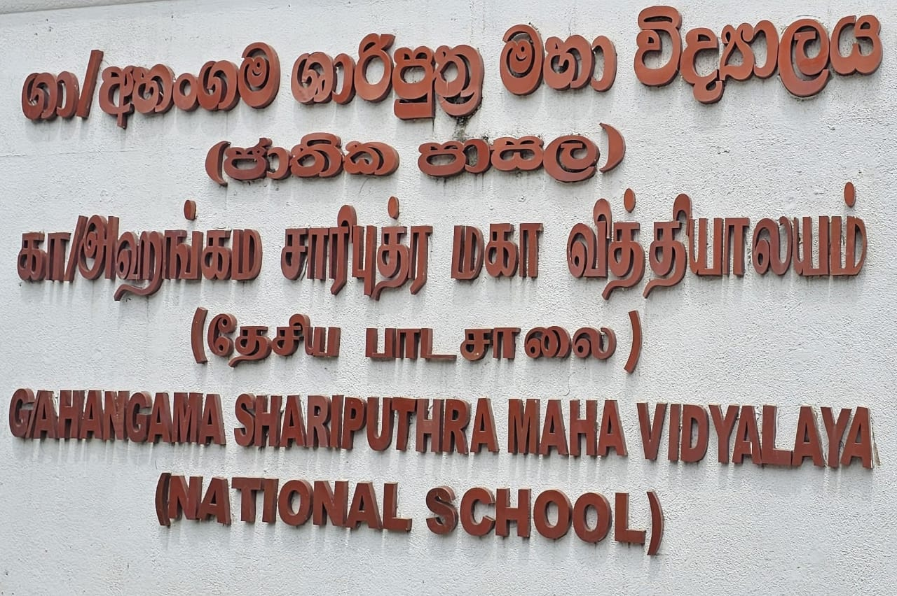

පාසල පිළිබඳ විස්තර
අහංගම ශාරිපුත්ර මහා විද්යාලය වසර 155 සපුරයි

ඉංග්රීසි පාලන සමයෙහි පහතරට බෞද්ධ අධ්යාපනයේ පුරෝගාමී යතිවරයාණන් වූ පූජ්ය දොඩන්දුවේ පියරතන තිස්ස නා හිමියන් විසින් ආරම්භ කරන ලද බෞද්ධ පාසල් 5න් එකක් වූ අහංගම ශාරිපුත්ර මහා විද්යාලය 2025 ජනවාරි මස වන විට වසර 155 ක් සම්පූර්ණ කරයි. වර්ෂ 1870 දී හතුවා පියදීගම බෞද්ධ මිශ්ර පාඨශාලාව යනුවෙන් එවකට කීර්තිමත් දානපතියෙකු වූ එච්.ආර්.එච්.අල්විස් හෙවත් බබා සිඤ්ඤ මුදලාලි විසින් පෞද්ගලික පාසලක් ලෙස ආරම්භ කොට ඇත. පූජ්ය දොඩන්දුවේ පියරතන තිස්ස නාහිමියන්ගේ සහ ප්රථම බෞද්ධ මුද්රණාලය ස්ථාපිත කළ පූජ්ය බුලත්ගම ධම්මාලංකාර නාහිමියන් මූලීකත්වය ගෙන ඇත. 1905 වන විට රජයේ ආධාර ලබන පාසලක් ලෙස ප්රසිද්ධ ඉගැන්වීම් දෙපාර්තමේන්තුව යටතේ ලියාපදිංචි කරගත්ත ද, පාලනය ගෙන ගියේ තනි කළමනාකරුවකු විසිනි. 1918 දී තවත් කළමනාකරුවකු විසින් පාලනය කරන ලද පාසල 1934 වන විට පවත්වාගෙන යාමේ ගැටලු ඇති වූයෙන් තලවකැලේ ප්රසිද්ධ ව්යාපාරිකයෙකු වූ UKD සහෝදර සමාගමේ ළමනාකාර අධ්යක්ෂක යූ.කේ.ජේ.ද සිල්වා ශ්රීමතාණන් විසින් කළමනාකාර ධූරය බාරගන්නා ලදුව 1960 වන තුරුම පාලනය ගෙන ගොස් තිබේ. එවකට ඉංග්රීසි පාසලක පවතින සියලුම අංගයන් අහංගම ශාරිපුත්ර විද්යාලයේ සකස් කොට තිබිණි බොක්සින් ක්රීඩාව හා මල්ලව පොර ක්රීඩාව ආරම්භ කොට තිබුණේ එක්දාස් 1928 තරම් ඈත යුගයකදීය.
1930 දී නිදහස් අධ්යාපනය පියා යයි විරුදාවලි ලත් සී. ඩබ්ලිව්. ඩබ්ලිව්. කන්නංගර මැතිතුමා එවකට රාජ්ය මන්ත්රණ සභාවේ නියෝජිතයකු වශයෙන් ත්යාග ප්රදානෝත්සවයක් සඳහා පැමිණ තිබීම විශේෂත්වයකි. 1937 දී සම්මානනීය ලේඛකයෙකු, සම්මානනීය කලාකරුවකු වන කිවිපති අරිසෙන් අහුබුදු සූරීන් පළමු පත්වීම මෙම විද්යාලයේ ලබාගෙන ඇත. හෙළ හවුලේ සාමාජිකයන් බොහෝ පිරිසක් ගුරුවරුන් ලෙස කටයුතු කළ මෙම විද්යාලයේදී 1939 "හෙළ හවුල සංවත්සරය උත්සවය පවත්වා තිබුණේ විශාරද සුනිල් සාන්ත, පී.එල්.ඒ. සෝමපාල චිත්රා සෝමපාල යන කලාකරුවන්ගේ ද සහභාගිත්වය ඇතිවය. 1962 දී රජයේ පාලනයට අයත් වන අහංගම ශාරිපුත්ර විද්යාලය විදුහල්පතිවරු දහ නම දෙනෙකු විසින් මේ දක්වා පාලනය කොට තිබේ. කළමනාකරුවන් හතර දෙනකුගේ පාලනය යටතේ පැවති පාසල 1962 සිට රජයේ තනි පාලනයට පත්ව ඇත. හතුවා පේදිගම බෞද්ධ මිශ්ර පාඨශාලාව යන නම අහංග වශයෙන් පුත්ර විද්යාලයේ යනුවෙන් භාවිතාවට ගෙන ඇත්තේ 1918න් පසුවය.
ලොව ප්රථම අභ්යවකාශ ගාමියා ලෙස සැලකෙන රුසියානු ජාතික යුරි ගගාරින් මැතිතුමා ලංකාවට පැමිණි අවස්ථාවේ මාතර සංචාරය අතරතුර එතුමන් පිළිගැනීමට ලක් කළ පාසලක් වීම ද සුවිශේෂී කරුණකි. 1963දී මහා විද්යාලයක් ලෙස උසස් කරන ලද මෙම විද්යාලය 1972 වන විට උසස් පෙළ විද්යාව විෂයන් ඉගැන්වීම සඳහාද අවසර ලබා දී තිබුණු පාසලක් වී තිබේ. සම්භාවනීය කලාකරුවන් අධ්යාපනඥයන් , වෛද්යවරුන්, අමාත්යාංශ ලේකම්වරු, ව්යාපාරිකයන් නිර්මාණය කිරීමට දායක වූ අහංගම ශාරිපුත්ර විද්යාලය එවකට ප්රදේශයේ ප්රභූවරයන් හේම බස්නායක අග්ර විනිශ්චයකාර තුමාගේ සහ වැලිගම මන්ත්රී ද, ප්රසිද්ධ වැඩ හා තැපැල් ඇමති මොන්ටේගු ජයවික්රම. හබරාදුව මහජන මන්ත්රී ඩී.එස්.ගුණසේකර මැතිතුමන්ලාගේද අනුග්රහය ලබා ඇති මෙම පාසල 1889 දී ස්ථීර ගොඩනැගිලි සකස් කිරීම සඳහා මුල්ගල් තැබීමට පැමිණ ඇත්තේ ශ්රිමත් හෙන්රි ස්ටීල් ඕල්කට් මැතිතුමාය. පොල් අතු පාසලකින් ආරම්භ කොට තිබූ මෙම විද්යාලය ඕල්කටුතුමාගේ මැදිහත්වීම ස්ථිර ගොඩනැගිලි සහිතව සකස් කර තිබීම නිසා 1970 දශකය දක්වාම ඕල්කට් ශාලාව යනුවෙන් ශාලාවක් නම් කොට තිබී ඇත.
මේ වනවිට පළමු වසරේ සිට දහතුන වසර දක්වා සමාන්තර ශ්රේණි හතර දක්වා පවත්වාගෙන යනු ලබන අහංගම ශාරිපුත්ර විද්යාලයේ ගුරු මණ්ඩලය හැත්ත දෙකක් පමණ වෙයි. ප්රධාන විදුහල්පතිවරයාට අමතරව නියෝජ්ය විදුහල්පතිවරියෝ තිදෙනෙක් ද සේවයේ යෙදී සිටිති. මෙම විද්යාලයෙහි සාමාන්ය පෙළ ප්රතිඵල ය ජාතික මට්ටම ඉක්මවා ලබා ගැනීමට ගැන වර්ෂ ගණනාවක් ම සමත් වී ඇත. ශිෂ්යත්ව ප්රතිඵලය හැම වසරකම උසස් පට්ටමක පවත්වාගෙන යෑමට යුතු කර ඇති මෙම විද්යාලයෙහි මෙවරද ශිෂ්යත්වලාභීන් දොළොස් දෙනෙකු සිටි. සෑම වසරකම උසස් පෙළ කලා හා වාණිජ අංශවලින් විශ්ව විද්යාල වරම් ලබා ගන්නා සිසුන් ප්රමාණය ඉහළ අගයක් ගනියි. 1970 දී විද්යාලයේ ශිෂ්ය නායකයාව සිටි රංජිත් කුමාර රත්න සිසුවා 1997 දී ඉන්දූනීසියාවේ ජකර්තා නුවර පැවැති දකුණු ආසියා ප්රවීණයන්ගේ ක්රීඩා උළෙලේදී රන් සම්මානයකට හිමිකම් ලැබීම ද පාසලට ආඩම්බරයකි. 1986 දී සංගීත ගායන හා වාදන තරගාවලියේ දී වාදන අඊශයේ සමස්ත ලංකා ප්රථම ස්ථානය දිනාගත් මෙම විද්යාලය නැවත වතාවක් 2026 වසරේද ඒ සමත්කම සිදුකොට තිබේ. ක්රීඩා ක්ෂේත්රයේ 1969 සිට වසර හතරක් පිටපිට වොලිබෝල් ශූරතාවය දිනාගත් අහංගම ශාරිපුත්ර මහා විද්යාලය මේ වන විට ක්රීඩා අංශයෙන් ඉහළ මට්ටමකට පැමිණ තිබේ. 2010 වසරේ සමස්ත ලංකා පාසල් බොක්සින් සංගමයේ සභාපති ධුරය අහංගම ශාරිපුත්ර වෘද්යාලයට හිමිවී තිබූණි. මෙම විද්යාලයේ පවත්වාගෙන ගිය ගෘහත්ථ ක්රීඩාගාරය දකුණු පළාතේ විශාලම ක්රීඩාගාරය බවට පත්ව තිබී. මේ වන විට අබලන්තත්වයකට ඇද වැටී ඇත.
වසර 155ක් සම්පූර්ණ කරන අහංගම ශාරිපුත්ර විද්යාලය අතීතයේ සිට මේ දක්වා ඉගැන්වීම් කළ ගුරුභවතුන් වෙනුවෙන් උපහාර පිදීමේ වැඩසටහනක් ද 1870 සිට 2025 දක්වා වූ අවුරුදු එකසිය පනස් පහක ඉතිහාසය අළලා විද්යාලයේ ස ආවාර්ය වරයකු වන එච්.එම්.තරංග මහතා විසින් සම්පාදනය කළ සැරියුත් වංශය කෘතිය දොරට වැඩීමේ උළෙලද 155 වන සංවත්සර උත්සවය ද විද්යාලයේ 1950 සිට 2023 දක්වා වසර වල ආදි ශිෂ්ය ශිෂ්යාවන්ගේ පූර්ණ දායකත්වයෙන් හා මැදිහත්වීමෙන් *155 සැරියුත් වංසය දෙටු ඇදුරු දෝතට"* යන තේමාව යටතේ පවත්වනු ලබන උපහාර උළෙල 2025 බරවාරි මස 22 වන දින උදේ නමයට විද්යාලීය ප්රධාන ශාලාවේදී පැවැත්වීමට කටයුතු සංවිධානය කොට ඇත මේ සඳහා ආරාධිතයන් ලෙස ඇරිකාවේ නාසා ආයතනයේ ජ්යෙෂ්ඨ විද්යාඥ මහාචාර්ය සරත් ගුණපාල මැතිතුමා ද, සම්මානනීය මහාචාර්ය සුනිල් ආරියරත්න මැතිතුමා ද, මහාචාර්ය චන්දන ජයරත්න මැතිතුමා ,ද මහාචාර්ය ටී.පී වීරරත්න මහත්මා ද , සංගීත විශාරද නන්දා මාලනී මහත්මිය ද විශාරද ඉන්දිකා උපමාලි මහත්මිය ද සහභාගි වීමට නියමිතය. ආදී ශිෂ්ය කුණු පළාත් ආණ්ඩුකාර ලේකම් ඉන්දික සමරකෝන් මැතිතුමාගේ ද ආදී ශිෂ්ය හිටපු දකුණු පළාත් නියෝජ්ය ලේකම් මහින්ද විජේවීර මහත්මාගේ ද ගාල්ල හා මාතර නගර වල ප්රසිද්ධ පාසල්වල සියලුම විදුහල්පතිවරුන් හා අධ්යාපන ක්ෂේත්රයේ සියලුම නිලධාරීන්ගේ ද වර්තමාන ශිෂ්ය ප්රජාවගේ ද දෙමව්පියන් හ ගුරුවරුන් ඇතුළු ආදි ශිෂ්ය සියලු දෙනාගේම සහභාගිත්වයෙන් සිදුකිරීමට මේ වන විට කටයුතු සංවිධානය කොට ඇත. දකුණු පළාතේ ජනප්රිය පාසල් අතර පාසලක් වන අහංගම ශාරිපුත්ර විද්යාලය ඉදිරි දශකය තුළ දියුණු ජනප්රිය පාසලක් බවට පත්කිරීමේ වගකීම වර්තමාන විදුහල්පති සී.එන්.ඩබ්ලිව්. ගුණරත්න මැතිතුමා විසින් බාරගෙන තිබේ. ශක්තිමත් ආචාර්ය මණ්ඩලයක් ආදිෂ්ය පිරිසක් හා දෙමාපිය ප්රජාවක් මේ වන විට පාසල වටා එකතු වී තිබෙන බවද විදුහල්පතිතුමා අප සමග පැවසීය. සුනාමි යාපදා තත්ත්වයෙන් පීඩා ව පත්වී තිබූ මෙම විද්යාලය ගොඩනැගීම සඳහා දායකත්වය සපයන ලද පාර්ශ්ව බොහෝ ගණනක් ඇත ඒ අතර හිටපු කලපන ආකාර යූ.කේ.ජේ.ද සිල්වා මැතිතුමාගේ දරු පිරිස විසින් සහ ඇමරිකාවේ ලොස් ඇන්ජලිස් බෞද්ධ විහාරාධිපති ශාස්ත්රපති පණ්ඩිත පූජ්ය අහංගම ධර්මාරාම නාහිමියන්ගේ පූර්ණ දායකත්වයත් උන්වහන්සේ නියෝජනය කරමින් අහංගම ව්යාපාරික යූ.කේ.වාසුල ජයදේව මහත්මාත් කටයුතු කර තිබිණ. එතුමන්ලාගේ පෞද්ගලික වියදමින් ඉදිකරන ලද දෙමහල් පුස්තකාල ගොඩනැගිල්ල, පරිගණක තාක්ෂණ විද්යාගාරය මේ වනවිට පාසලේ ක්රියාත්මකව පවතී. විෂය හා විෂය බාහිර ක්රියාකාරකම්වලින් මෙන්ම ක්රීඩා ෂේත්රයේ ද දක්ෂතා සපිරි දරු පිරිසක් අධ්යාපනය ලබන මෙම පාසලෙහි වර්තමාන දූ දරු පිරිස 1800 ඉක්මවා ඇත එකසිය පනස් පස් වන සංවත්සරය සමරන අහංගම ශාරිපුත්ර මහා විද්යාල මාතාව තවත් සියවස් ගණනාවක් මේ රටේ දූ දරුවන්ගේ දැනුම් පිපාසය සන්සිදවන තෝතැන්නක් ලෙස පවත්වාගෙන යෑම වර්තමාන සමාජයේ වගකීම වේ. "විදු ලොවත් වැඩ ලොවත් ජයගත හැකියි විශ්වීය මිනිසකු නිර්මාණය කිරීම" මේ පාසලේ දැක්ම වේ ඒ සඳහා ඇප කැපවුණු ආචාර්ය මණ්ඩලයක්ද ආදී ශිෂ්ය එකමුතුවක් ද සිටීම ජාතියට වාසනාවකි...
H M තරංග ගුරුතුමා
හදවතට දැණුනු සංකල්පය එළිදැක්වූ ඔහු
චමත් අබේගුණවර්ධන මහතා
වෙබ් අඩවිය නිර්මාණය සඳහා සහාය දැක්වු